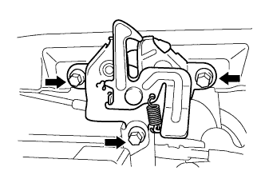
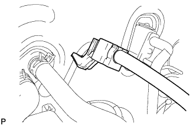
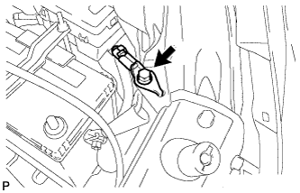
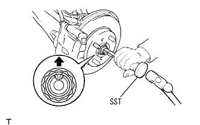
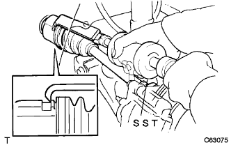
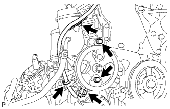
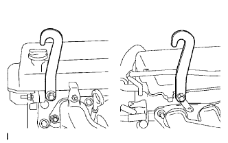
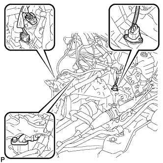
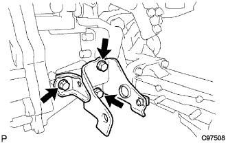
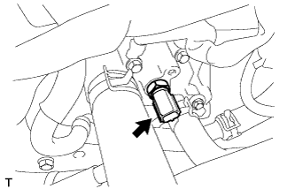

パーシャル エンジンASSY（1NZ-FE(4WD)） 取り外し |
| 1. 燃料流出防止作業 |
参照)| 2. フロントタイヤ取りはずし |
| 3. エンジンアンダ カバー RH取りはずし |
ボルト2本およびスクリュ2本をはずす。
ナットをはずし、エンジンアンダカバーRHを取りはずす。
| 4. エンジンアンダ カバー LH取りはずし |
ボルト2本およびスクリュ2本をはずし、エンジンアンダカバーLHを取りはずす。
| 5. 冷却液(トヨタ純正スーパーLLC)抜き取り |
ラジエータキヤツプを開ける。
ラジエータドレーンコツクプラグをゆるめ冷却液を抜き取る。
| 6. オートマチックトランスアクスルフルード抜き取り |
ドレーンプラグおよびガスケットをはずし、フルードを抜き取る。
新品のガスケットを介して、ドレーンプラグを締め付ける。
| 7. バッテリ取りはずし |
ナット2個をはずし、バッテリクランプおよびアクセルレータケーブルステーを取りはずす。
バッテリを取りはずす。
バッテリトレイを取りはずす。
| 8. エア クリーナASSY取りはずし |
エアクリーナキヤツプとエアクリーナホースNo.1を取りはずす。
エアクリーナフイルタエレメントを取りはずす。
ボルト4本をはずし、エアクリーナケースとエアクリーナインレツトNo.1およびエアクリーナインレツトNo.2を取りはずす。
| 9. ラジエータ インレット ホース取りはずし |
クランプをはずし、ラジエータインレットホースを取りはずす｡
| 10. ラジエータ アウトレットホース取りはずし |
クランプをはずし、ラジエータアウトレットホースを取りはずす｡
| 11. オイルクーラインレット ホース切り離し |
クランプを取りはずし、オイルクーラインレットホースを切り離す。
| 12. オイルクーラアウトレット ホース切り離し |
クランプを取りはずし、オイルクーラアウトレットホースを切り離す。
| 13. ラジエータ グリル W/ラジエータ サポート シール UPR取りはずし |
クリップリムーバーを使用して、クリップ6個を取りはずす。
 |
ラジエータグリル、ラジエータサポートシールUPRの周囲および上面に保護テープを貼りつける。
保護テープを貼ったマイナスドライバーを使用して、図の3箇所のツメのかん合をサポートシールを車両後方にずらしてはずす。

ラジエータサポートシールUPRを持ち上げ、すき間からラジエータグリルのツメのかん合をはずす。

ツメのかん合がはずれているのを確認しラジエータグリルを取りはずす。
ラジエータ サポート シール UPRを取りはずす。
| 14. フード ロックASSY取りはずし |
|  |
ボルト3本をはずし、フード ロックASSYを取りはずす。
フード ロックASSYからフードロックコントロール ケーブルASSYを切り離す。
| 15. フードロック サポートSUB-ASSY取りはずし |
 |
ボルト4本およびクリップをはずし、フードロック サポートSUB-ASSYを取りはずす。
| 16. フードロックサポート ブレース取りはずし |
フードロックコントロール ケーブルASSYのクランプを切り離す。
 |
ボルト4本をはずし、フードロックサポート ブレースを取りはずす。
| 17. ラジエータ サポートSUB-ASSY UPR取りはずし |
 |
ホーンASSYのコネクターおよびクランプを切り離す。
ボルト4本およびクリップをはずし、ラジエータ サポートSUB-ASSY UPRを取りはずす。
| 18. ラジエータASSY取りはずし |
クーリングファンモータのコネクターおよびワイヤハーネスクランプを切り離し、車両よりラジエータASSY W/ファンシュラウドを取りはずす。
| 19. シリンダヘッド カバー NO.2取りはずし |
 |
ナット4個をはずし、シリンダヘッドカバーNO.2を取りはずす。
| 20. アクセルレータ コントロールケーブルASSY切り離し |
ナットを緩めてアクセルレータコントロールケーブルASSYをアクセルレータコントロールケーブルブラケツトから切り離す。
| 21. コラムシフト トランスミッション コントロールケーブルASSY切り離し |
 |
ナットをはずし、コントロールケーブルをコントロールシャフトレバーから切り離す。
クリップをはずし、コントロールケーブルをコントロールブラケットから切り離す。
コントロールケーブルをコントロールケーブルサポートから切り離す。
| 22. ユニオン トゥー チェックバルブ ホース取りはずし |
ブースタバキュームチューブからユニオン トゥー チェックバルブ ホースを切り離す。
| 23. ヒータウォータ ホース インレット A切り離し |
 |
ヒータウォータ ホース インレット Aをラジエータヒータユニットから切り離す。
| 24. ヒータウォータ ホース アウトレット A切り離し |
 |
ヒータウォータ ホース アウトレット Aをラジエータヒータユニットから切り離す。
| 25. フューエル チューブSUB-ASSY切り離し |
|  |
フューエルパイプクランプNO.1を取りはずす。
 |
フューエルチューブコネクターとフューエルパイプを切り離す。
| 26. ファン ＆ オルタネータ Vベルト取りはずし |
 |
調整用ボルトAおよび固定用ボルトBを緩める。
Vベルトの張力を緩めてVベルトを取りはずす。
| 27. クーラコンプレッサ W/マグネットクラッチASSY切り離し |
コネクターを切り離す。
ボルト4本をはずし、コンプレッサASSYを切り離す。
| 28. ワイヤハーネス切り離し |
 |
クラブボックスを取りはずす。
エンジンワイヤをエンジンコントロールコンピュータおよびジャンクションブロックから切り離す。
エンジンワイヤをエンジンルーム内に引き抜く。
エンジンルームジャンクションブロックからコネクターおよびクランプをはずし、ワイヤハーネスを切り離す。
|  |
ボルトをはずし、エンジンルームワイヤハーネスのアースワイヤを切り離す。
全てのワイヤハーネスおよびコネクターを切り離し、ボデーとエンジン間にワイヤハーネスがつながっていないことを確認する。
| 29. ステアリングコラムホールカバー プレート取りはずし |
 |
クリップ２個をはすし、ステアリングコラムホールカバープレートを取りはずす。
| 30. ステアリングスライディング ヨークSUB-ASSY切り離し |
 |
ステアリングホイールが回転しないようにシートベルトを取り付ける。
 |
スライディングヨークのコラム側(A)のボルトをゆるめる。
スライデイングヨークのギヤ側(B)のボルトを取りはずす。
スライディングヨークとインタミディエイトシャフトに合わせマークを付け、スライディングヨークを切り離す。
| 31. オキシジェン センサ取りはずし |
参照)| 32. ステアリングコラムホール カバーSUB-ASSY NO.1切り離し |
 |
クリップAをはずし、ホールカバーNo.1をボデーから切り離す。
| 33. エキゾースト パイプASSY CTR取りはずし |
ナット2個およびボルト2本を取りはずす。
エキゾーストパイプサポート2個をはずし、エキゾースト パイプASSY CTRを取りはずす。
ガスケット2個を取り外す。
| 34. プロペラシャフトASSY取りはずし |
 |
プロペラシャフトASSYおよびプロペラインタミディエイトシャフトASSYに合わせマークをつける。
ボルト4本、ワッシャおよびナット各４個をはずし、プロペラシャフトASSYをインタミディエイトシャフトASSYから切り離す。
| *a | 合わせマーク |
プロペラシャフトASSYを取りはずした後、エクステンションハウジングにSSTを挿入する。
| 35. フロントアクスル シャフト ナット LH取りはずし |
|  |
フロントドライブシャフトASSY LHの溝部に合わせてSSTをセットし、ハンマーを使用してかしめを解く。
ソケットレンチ(30mm)を使用して、フロントアクスルハブナット LHを取りはずす。
| 36. フロントアクスル シャフト ナット RH取りはずし |
| 37. スピード センサ FR LH切り離し |
 |
スピードセンサFR LHのクリップおよびフレキシブルホースのボルトを取りはずし、フロントショックアブソーバASSY LHから切り離す。
 |
ボルトをはずし、スピードセンサFR LHをステアリングナックルから切り離す。
| 38. スピード センサ FR RH切り離し |
| 39. スタビライザ バー FR切り離し |
フロントスタビライザボルトをスパナ（10mm）で固定し、ナット2個を取りはずす。
フロントスタビライザバークッションリテーナNo.1を4個、フロントスタビライザクッション4個、フロントスタビライザバークッションリテーナNo.2およびフロントスタビライザボルトを取りはずす。
 |
反対側も同様の手順で取りはずす。
| 40. フロントサスペンションロワーアームNo.1 LH切り離し |
コッターピンをはずし、キャッスルナットを取りはずす。
 |
SSTをフロントサスペンションロワーアームNo.1 LHに取り付ける。
SSTを使用して、ロワーアームのボールジョイント部をステアリングナックルから切り離す。
| *a | この位置にレンチをかける | - | - |
| 41. フロントサスペンションロワーアームNo.1 RH切り離し |
| 42. タイロッド エンドSUB-ASSY LH切り離し |
コッターピンをはずし、キャッスルナットを取りはずす。
SSTをタイロッド エンドSUB-ASSY LHに取り付ける。
SSTを使用して、タイロッドエンドLHをステアリングナックルから切り離す。
| *a | この位置にレンチをかける | *b | 駆動 |
| 43. タイロッド エンドSUB-ASSY RH切り離し |
| 44. フロントアクスルASSY LH切り離し |
 |
ボルト2本およびナット2個をはずして、フロントショックアブソーバASSY LHからフロントアクスルASSY LHを切り離す。
プラスチックハンマーを使用して、フロントドライブシャフトASSY LHの先端を軽くたたき、フロントドライブシャフトASSY LHとフロントアクスルASSY LHのかん合をはずす。
 |
フロントアクスルASSY LHを車両外側に押して、フロントドライブシャフトASSY LHをフロントアクスルASSY LHから抜く。
| 45. フロントアクスルASSY RH切り離し |
| 46. フロントドライブ シャフトASSY LH取りはずし |
|  |
SSTをフロントドライブシャフトASSY LHの図の位置にかけて取りはずす。
| 47. フロントドライブ シャフトASSY RH取りはずし |
 |
角軸マイナスドライバーでベアリングブラケットホールスナップリングを押し縮め、ベアリングブラケットから取りはずす。
ドライブシャフトベアリングブラケットボルトNo.1をはずす。
 |
ドライブシャフトベアリングブラケットからフロントドライブシャフトASSY RHを取りはずす。
| 48. エンジンASSY W/トランスアクスル取りはずし |
 |
高さ調整式アタッチメントおよびプレートリフトアタッチメントをセットし、エンジンリフターをセットする。
 |
ボルト5本およびナットをはずし、エンジンマウンティングインシュレータRHを取りはずす。
 |
ボルト2本をはずし、エンジンマウンティングインシュレータLHを切り離す。
 |
ボルト4本をはずし、フロントサスペンションメンバリインホースメントLHおよびRHを取りはずす。
 |
ボルト4本をはずし、エンジンASSY W/トランスアクスルおよびフロントサスペンションクロスメンバを車両より取りはずす。
| 49. ベーン ポンプASSY切り離し |
 |
ベーンポンプVベルトを取りはずす。
固定用ボルトAおよび調整用ボルトBをゆるめる。
Vベルトの張力をゆるめてVベルトを取りはずす。
コネクターおよびクランプを切り離す。
|  |
ボルト2本をはずし、ベーンポンプASSYをエンジンより切り離す。
| 50. パワーステアリング リンクASSY取りはずし |
 |
ボルト2本をはずし、パワーステアリングリンクASSY W/ベーンポンプを取りはずす。
| 51. フロントサスペンション クロスメンバSUB-ASSY取りはずし |
ボルトおよびコネクターをはずし、ラジオセッティングコンデンサおよびオキシジエンセンサワイヤリングブラケットを取りはずす。
|  |
図の箇所にエンジンハンガをボルトで取り付ける。
| 品名 | 品番 |
| エンジンハンガ | 12281-21010 |
| ボルト | 91642-81025 |
エンジンスリングデバイスおよびチェーンブロックを使用して、エンジンASSY W/トランスアクスルおよびフロントサスペンションクロスメンバを保持する。
エンジンマウンティングインシュレータRRおよびエンジンマウンティングブラケットRRのスルーボルトをはずし、フロントサスペンションクロスメンバを取りはずす。
| 52. エキゾーストパイプASSY FR取りはずし |
ボルト2本およびスプリング2本をはずし、エキゾーストパイプASSY FRを取りはずす｡
| 53. フライホイールハウジングサイド カバー取りはずし |
 |
下側から上に押し上げるようにしてつめのかん合をはずし、フライホイールハウジングカバーを取りはずす。
| 54. スタータASSY取りはずし |
 |
ターミナルキヤツプをめくる。
ナットをはずし、30端子を取りはずす。
ボルト２本をはずし、スタータASSYを取りはずす。
コネクタを切り離す。
| 55. ワイヤハーネス取りはずし |
 |
ボルトをはずし、エアクリーナブラケットを取りはずす。
ボルトをはずし、ワイヤハーネスクランプをオートマチックトランスアクスルから取りはずす。
| 56. コネクター切り離し |
|  |
スピードメータセンサーコネクター、トランスミッションワイヤコネクター、ニュートラルスタートスイッチコネクターおよびレボリューションセンサコネクターを切り離す。
| 57. エンジンマウンティング ブラケット RR取りはずし |
|  |
ボルト3本をはずし、エンジンマウンティングブラケットRRを取りはずす。
| 58. マニホルドサポート ブラケット取りはずし |
 |
ボルト3本をはずし、マニホールドサポートブラケットを取りはずす。
| 59. トランスファスティフナ プレート CTR取りはずし |
 |
ボルト5本をはずし、トランスファスチフナプレートCTRを取りはずす。
| 60. トランスファスティフナ プレート RH取りはずし |
 |
ボルト5本をはずし、トランスファスチフナプレートRHを取りはずす。
| 61. トランスファASSY取りはずし |
ナット6個を取りはずす。
 |
トランスファASSYをトランスアクスルASSYから取りはずす。
| 62. オートマチックトランスアクスルASSY取りはずし |
 |
トルクコンバータセットボルト6本を取りはずす。
 |
ボルト7本をはずし、トランスアクスルASSYをエンジンから取りはずす。
| 63. ドライブプレート ＆ リング ギヤSUB-ASSY取りはずし |
 |
SSTを使用して、クランクシャフトダンパを固定する。
 |
ボルト6本をはずし、ドライブプレートを取りはずす。
| 64. イグニッション コイル NO.1取りはずし |
 |
ボルト4本をはずし、イグニッション コイル NO.1 4個を取り外す。
| 65. オルタネータASSY取りはずし |
 |
ターミナルキャップを取りはずす。
コネクタおよびハーネスクランプを切り離す。
ナットをはずし、B端子ターミナルを取りはずす。
 |
ボルトAおよびナットをはずし、ファンベルトアジャスティングバーを取りはずす。
 |
固定用ボルトBをはずし、オルタネータを取りはずす。
| 66. インテーク マニホルド取りはずし |
 |
ボルト2本をはずし、ブレーキブースタ用バキュームチューブを取りはずす。
インテークマニホールドからワイヤハーネスを切り離す。
図の順序でボルト3本およびナット2個をはずし、インテークマニホールドを取りはずす。
インテークマニホールドからインテークマニホルドツウヘッドガスケットを取りはずす。
| 67. オイルレベルゲージ ガイド取りはずし |
オイルレベルゲージを取りはずす。
ボルトをはずし、オイルレベルゲージガイドを取りはずす。
| 68. ウォータバイパス パイプ NO.1取りはずし |
ボルト2本およびナット2個をはずし、ウォータバイパスパイプNO.1を取りはずす。
| 69. ウォータ インレット取りはずし |
ナット２個をはずし、ウォータインレット Ｗ/ラジエータアウトレットホースを取りはずす。
| 70. サーモスタット取りはずし |
サーモスタット Ｗ/ガスケットを取りはずす。
| 71. エンジン オイルプレッシャ スイッチASSY取りはずし |
オイルプレッシャスイッチ用コネクターを切り離す。
ディープソケットレンチ(24ｍｍ)を使用して、オイルプレッシャスイッチを取りはずす。
| 72. ノックコントロール センサ取りはずし |
 |
ノックコントロール センサのコネクターを切り離す。
ナットをはずし、ノックコントロール センサを取りはずす。
| 73. E.F.I. ウォータテンパラチャ センサ取りはずし |
|  |
ディープソケットレンチ19mmを使用して、E.F.I. ウォータテンパラチャ センサおよびガスケットを取りはずす。
| 74. クウネンヒ センサ取りはずし |
クランプおよびコネクターを切り離す。
 |
SSTを使用して、クウネンヒ センサを取りはずす。
| 75. エキゾーストマニホルドヒート インシュレータ NO.1取りはずし |
 |
ボルト4本をはずし、エキゾーストマニホルドヒートインシュレータ NO.1を取りはずす。
| 76. エキゾースト マニホルド取りはずし |
ボルト3本およびナット2個をはずし、エキゾーストマニホルドを取りはずす。
エキゾーストマニホルドツウヘッドガスケットを取りはずす。